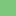

<!doctype html>
<html lang="en">
    <head>
        <meta charset="utf-8">
        <meta http-equiv="X-UA-Compatible" content="IE=edge">
        <meta name="viewport" content="initial-scale=1,user-scalable=no,maximum-scale=1,width=device-width">
        <meta name="mobile-web-app-capable" content="yes">
        <meta name="apple-mobile-web-app-capable" content="yes">
        <link rel="stylesheet" href="css/leaflet.css">
        <link rel="stylesheet" href="css/qgis2web.css"><link rel="stylesheet" href="css/fontawesome-all.min.css">
        <style>
        html, body, #map {
            width: 100%;
            height: 100%;
            padding: 0;
            margin: 0;
        }
        </style>
        <title></title>
    </head>
    <body>
        <div id="map">
        </div>
        <script src="js/qgis2web_expressions.js"></script>
        <script src="js/leaflet.js"></script>
        <script src="js/leaflet.rotatedMarker.js"></script>
        <script src="js/leaflet.pattern.js"></script>
        <script src="js/leaflet-hash.js"></script>
        <script src="js/Autolinker.min.js"></script>
        <script src="js/rbush.min.js"></script>
        <script src="js/labelgun.min.js"></script>
        <script src="js/labels.js"></script>
        <script src="data/Bosquestemplados_1.js"></script>
        <script>
        var map = L.map('map', {
            zoomControl:true, maxZoom:28, minZoom:1
        }).fitBounds([[22.27489603165016,-107.76658156769173],[26.956338833922178,-103.14755800278334]]);
        var hash = new L.Hash(map);
        map.attributionControl.setPrefix('<a href="https://github.com/tomchadwin/qgis2web" target="_blank">qgis2web</a> &middot; <a href="https://leafletjs.com" title="A JS library for interactive maps">Leaflet</a> &middot; <a href="https://qgis.org">QGIS</a>');
        var autolinker = new Autolinker({truncate: {length: 30, location: 'smart'}});
        var bounds_group = new L.featureGroup([]);
        function setBounds() {
        }
        map.createPane('pane_GoogleSatelliteHybrid_0');
        map.getPane('pane_GoogleSatelliteHybrid_0').style.zIndex = 400;
        var layer_GoogleSatelliteHybrid_0 = L.tileLayer('http://mt1.google.com/vt/lyrs=y&x={x}&y={y}&z={z}', {
            pane: 'pane_GoogleSatelliteHybrid_0',
            opacity: 1.0,
            attribution: '',
            minZoom: 1,
            maxZoom: 28,
            minNativeZoom: 0,
            maxNativeZoom: 22
        });
        layer_GoogleSatelliteHybrid_0;
        map.addLayer(layer_GoogleSatelliteHybrid_0);
        function pop_Bosquestemplados_1(feature, layer) {
            var popupContent = '<table>\
                    <tr>\
                        <td colspan="2">' + (feature.properties['CLAVE'] !== null ? autolinker.link(feature.properties['CLAVE'].toLocaleString()) : '') + '</td>\
                    </tr>\
                    <tr>\
                        <td colspan="2">' + (feature.properties['DESCRIPCIO'] !== null ? autolinker.link(feature.properties['DESCRIPCIO'].toLocaleString()) : '') + '</td>\
                    </tr>\
                    <tr>\
                        <td colspan="2">' + (feature.properties['AREA'] !== null ? autolinker.link(feature.properties['AREA'].toLocaleString()) : '') + '</td>\
                    </tr>\
                    <tr>\
                        <td colspan="2">' + (feature.properties['usv_svii'] !== null ? autolinker.link(feature.properties['usv_svii'].toLocaleString()) : '') + '</td>\
                    </tr>\
                    <tr>\
                        <td colspan="2">' + (feature.properties['cov_'] !== null ? autolinker.link(feature.properties['cov_'].toLocaleString()) : '') + '</td>\
                    </tr>\
                    <tr>\
                        <td colspan="2">' + (feature.properties['cov_id'] !== null ? autolinker.link(feature.properties['cov_id'].toLocaleString()) : '') + '</td>\
                    </tr>\
                </table>';
            layer.bindPopup(popupContent, {maxHeight: 400});
        }

        function style_Bosquestemplados_1_0(feature) {
            switch(String(feature.properties['DESCRIPCIO'])) {
                case 'BOSQUE DE AYARÍN':
                    return {
                pane: 'pane_Bosquestemplados_1',
                stroke: false, 
                fill: true,
                fillOpacity: 1,
                fillColor: 'rgba(0,68,27,1.0)',
                interactive: true,
            }
                    break;
                case 'BOSQUE DE ENCINO':
                    return {
                pane: 'pane_Bosquestemplados_1',
                stroke: false, 
                fill: true,
                fillOpacity: 1,
                fillColor: 'rgba(19,126,58,1.0)',
                interactive: true,
            }
                    break;
                case 'BOSQUE DE ENCINO-PINO':
                    return {
                pane: 'pane_Bosquestemplados_1',
                stroke: false, 
                fill: true,
                fillOpacity: 1,
                fillColor: 'rgba(61,167,90,1.0)',
                interactive: true,
            }
                    break;
                case 'BOSQUE DE OYAMEL':
                    return {
                pane: 'pane_Bosquestemplados_1',
                stroke: false, 
                fill: true,
                fillOpacity: 1,
                fillColor: 'rgba(123,199,124,1.0)',
                interactive: true,
            }
                    break;
                case 'BOSQUE DE PINO':
                    return {
                pane: 'pane_Bosquestemplados_1',
                stroke: false, 
                fill: true,
                fillOpacity: 1,
                fillColor: 'rgba(178,224,171,1.0)',
                interactive: true,
            }
                    break;
                case 'BOSQUE DE PINO-ENCINO':
                    return {
                pane: 'pane_Bosquestemplados_1',
                stroke: false, 
                fill: true,
                fillOpacity: 1,
                fillColor: 'rgba(221,242,215,1.0)',
                interactive: true,
            }
                    break;
                case 'BOSQUE MESÓFILO DE MONTAÑA':
                    return {
                pane: 'pane_Bosquestemplados_1',
                stroke: false, 
                fill: true,
                fillOpacity: 1,
                fillColor: 'rgba(247,252,245,1.0)',
                interactive: true,
            }
                    break;
            }
        }
        map.createPane('pane_Bosquestemplados_1');
        map.getPane('pane_Bosquestemplados_1').style.zIndex = 401;
        map.getPane('pane_Bosquestemplados_1').style['mix-blend-mode'] = 'normal';
        var layer_Bosquestemplados_1 = new L.geoJson(json_Bosquestemplados_1, {
            attribution: '',
            interactive: true,
            dataVar: 'json_Bosquestemplados_1',
            layerName: 'layer_Bosquestemplados_1',
            pane: 'pane_Bosquestemplados_1',
            onEachFeature: pop_Bosquestemplados_1,
            style: style_Bosquestemplados_1_0,
        });
        bounds_group.addLayer(layer_Bosquestemplados_1);
        map.addLayer(layer_Bosquestemplados_1);
        map.createPane('pane_BiomasaMgha1_2');
        map.getPane('pane_BiomasaMgha1_2').style.zIndex = 402;
        var img_BiomasaMgha1_2 = 'data/BiomasaMgha1_2.png';
        var img_bounds_BiomasaMgha1_2 = [[22.3713038712924,-107.28876002070332],[26.861341051854556,-103.6572833805741]];
        var layer_BiomasaMgha1_2 = new L.imageOverlay(img_BiomasaMgha1_2,
                                              img_bounds_BiomasaMgha1_2,
                                              {pane: 'pane_BiomasaMgha1_2'});
        bounds_group.addLayer(layer_BiomasaMgha1_2);
        map.addLayer(layer_BiomasaMgha1_2);
        var baseMaps = {};
        L.control.layers(baseMaps,{"Biomasa (Mg ha-1)": layer_BiomasaMgha1_2,'Bosques templados<br /><table><tr><td style="text-align: center;"></td><td>BOSQUE DE AYARÍN</td></tr><tr><td style="text-align: center;"></td><td>BOSQUE DE ENCINO</td></tr><tr><td style="text-align: center;"></td><td>BOSQUE DE ENCINO-PINO</td></tr><tr><td style="text-align: center;"></td><td>BOSQUE DE OYAMEL</td></tr><tr><td style="text-align: center;"></td><td>BOSQUE DE PINO</td></tr><tr><td style="text-align: center;"></td><td>BOSQUE DE PINO-ENCINO</td></tr><tr><td style="text-align: center;"></td><td>BOSQUE MESÓFILO DE MONTAÑA</td></tr></table>': layer_Bosquestemplados_1,"Google Satellite Hybrid": layer_GoogleSatelliteHybrid_0,},{collapsed:false}).addTo(map);
        setBounds();
        L.ImageOverlay.include({
            getBounds: function () {
                return this._bounds;
            }
        });
        </script>
    </body>
</html>
